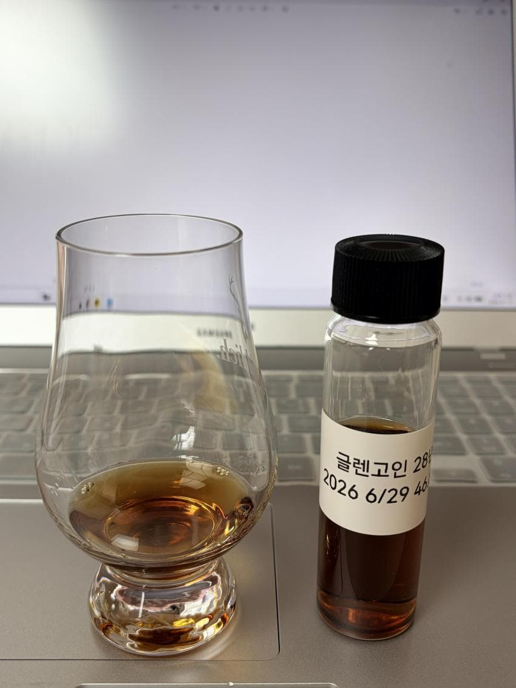

Glengoyne 28Y
주종: Single Malt Scotch Whisky
증류소: Glengoyne
병입자: Official Bottling
숙성년수: 28Y
도수: 46.8%
캐스크: First Fill Oloroso Cask
기타 정보: 쌍기러기라 불리는 구형
N - 스파이스, 베리, 장미, 자몽필, 란시오, 대추야자, 대추, 감초, 밀키
아주 묵직한 첫인상을 준다
고인 특유의 인상이 28년의 시간에도 여전히 느껴진다
유러피안 오크 비중이 높은듯한 정향을 포함한 향신료향들이 초반을 주도한다
굉장히 묵직하고 어두운 향들을 향신료들과 자몽필이 생기를 불어준다
약한 쿰쿰한 란시오 또한 지니고 있다
검붉은 베리와 장미향이 우아하게 피어난다
시간이 지나며 진득한 대추야자와 대추, 감초같은 한약재 뉘앙스가 약간의 밀키함이 곁들여져 있다
P - 포도, 오키, 다크초콜릿, 코코아, 리치, 장미, 대추야자, 너티, 란시오
포도알갱이와 짙은 오키함으로 시작한다
이후 장미 향기와 리치의 달콤함이 느껴지고
코코아가루의 파우더리함이 비강을 채우며 다크초콜릿의 강한 풍미와 떫떠름함이 혀를 감싼다
대추야자류의 뉘앙스는 강하지 않지만 후반부에서 드러나며 너티함이 란시오와 함께 묵직하게 쭉 올라온다
굉장히 우아하고 차분하다
F - 다크초콜릿, 홍차, 커피, 란시오, 대추야자, 감초, 오키
다코초콜릿의 풍미, 홍차의 탄닌감, 커피의 씁슬함이 아주 조화롭다
피니시가 아주 훌륭하다 란시오와 대추야자의 단맛이 풍미를 배가시키며
감초와 대추의 뉘앙스도 느낄 수 있다
총점 - 90
한줄평 - 중후하고 고혹적인 백조의 우아함
댓글 4개